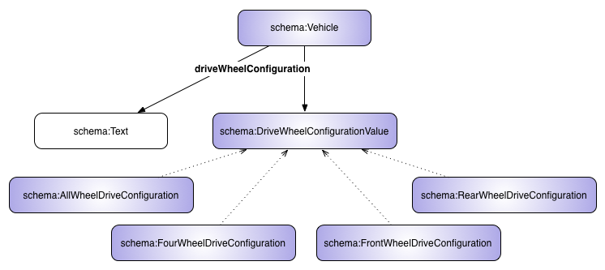
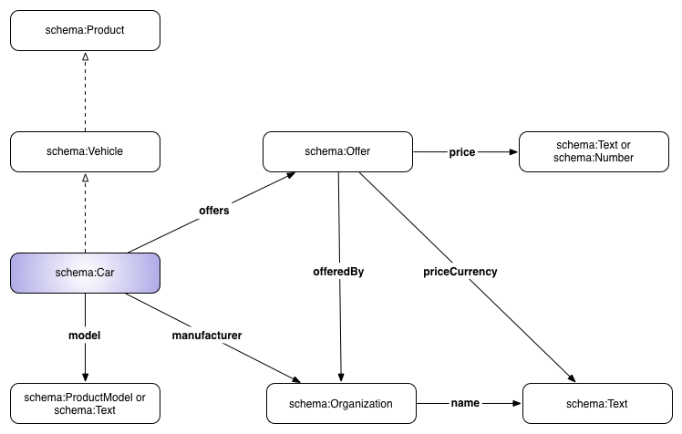

Markup for Autos
Table of contents
- Introduction
- Overview
- Conceptual map
- Hierarchy of terms
- Basic models
- Vehicle type and its subtypes
- Vehicle type and its properties
- Car acriss code and the roofLoad
- Drive wheel configuration for a vehicle
- Vehicle engine, steering position and car usage specification
- Using properties of the type Offer to describe a car
- Usage Examples
- Example 1. Used car
- Example 2. New, hybrid car
- Example 3. Used car with damages
- Example 4. Rental car with the acriss code
- Acknowledgements
Introduction
This page provides background Information on the use of schema.org for marking up automobiles. For more information and communication with the community behind the project, please refer to: http://w3.org/community/gao/. This work has its roots in the GAO project (Generic Automotive Ontology) and existing ontologies such as the Vehicle Sales Ontology (VSO), Car Options Ontology (COO) and Used Cars Ontology (UCO).
Overview
The automotive extension of schema.org (auto.schema.org) refers to the most important real-world objects related to popular vehicles like cars, buses (coaches) and motorcycles. Whilst the extension allows for a fair description of all kinds of vehicles, it focuses predominantly on passenger automobiles from the retail market perspective.
There are four major classes of objects reflected in the extension:
- The most popular types of automobiles and their usage
- The automobile configuration
- The engines and their characteristics
- The features of the automobiles that relate to their commercial aspects as products
In the selection of types and properties for each of the classes of objects, the extension authors (see "Acknowledgments") were motivated by the principles of simplicity and practicality. 'Simplicity' led to an extremely small set of terms, resulting in a lean extension, whilst 'practicality' limited the scope of terms to reflect the most important objects, as seen from the automotive market perspective.
The principle of 'Occam's Razor' dictated the focus on terms, reflecting general consumer preferences observed from the perspective of their searches and typical digital activities related to automobiles.
Some of the types and properties that reflect these objects and describe their features, were already defined in schema.org almost from its beginning. Others have entered into life in the "core" vocabulary in May 2015 with the publication of schema.org v2.0, and the totality of the terms was made available in May 2016 with the publication of schema.org v3.0, alongside the creation of http://auto.schema.org.
Despite these various origins, in this page we treat them all equally using the umbrella term "automotive extension", as all of them exist in the common shared schema.org namespace.
There is no doubt that the extension in its current form cannot satisfy all the needs of the automotive industry. However, what this extension does do is to create a framework that can be utilised now and can bring huge benefits despite its small footprint.
The authors of this project are committed to the future development of the automotive 'face' of the schema.org vocabulary. This is particularly important in the years to come as the whole automotive industry is dramatically changing with the proliferation of electric vehicles, popularity of "connected cars" and the advent of autonomous autos.
This on-going activity will include both the addition and amendment of the most important types and properties to the schema.org core, to the auto.schema.org extension and also to the future "external" automotive extensions of schema.org that need not be limited by the minimalism of the earlier "lean" approach.
The conceptual map and hierarchy of the automotive extension
The following diagrams represent the conceptual map of the extension. As explained before, the map contains elements from both the schema.org "core" and the actual automotive extension (at http://auto.schema.org).


The terms depicted on the violet background are documented in auto.schema.org, the remaining terms are part of the core vocabulary of schema.org.
Please note that the map shows the extension properties for the type "Car", which, together with "BusOrCoach", "Motorcycle" and "MotorizedBicycle" is sub-classed from the "Vehicle" type already existing in schema.org.
The complete hierarchy of all terms in the automotive extension (plus their hypernyms)
Types:
Properties:
-
Thing
-
Property
- accelerationTime
- acrissCode
- bodyType
- cargoVolume
- dateVehicleFirstRegistered
- driveWheelConfiguration
- emissionsCO2
- engineDisplacement
- enginePower
- engineType
- fuelCapacity
- fuelConsumption
- fuelEfficiency
- fuelType
- knownVehicleDamages
- meetsEmissionStandard
- mileageFromOdometer
- modelDate
- numberOfAirbags
- numberOfAxles
- numberOfDoors
- numberOfForwardGears
- numberOfPreviousOwners
- payload
- productionDate
- purchaseDate
- roofLoad
- seatingCapacity
- speed
- steeringPosition
- tongueWeight
- torque
- trailerWeight
- vehicleConfiguration
- vehicleEngine
- vehicleIdentificationNumber
- vehicleInteriorColor
- vehicleInteriorType
- vehicleModelDate
- vehicleSeatingCapacity
- vehicleSpecialUsage
- vehicleTransmission
- weightTotal
- wheelbase
-
Property
The basic models of the objects in the automotive extension
The diagram below illustrates the basic pattern for the description of the main classes of the objects of interest in the extension.
The Vehicle type and its subtypes

The top 'type' for the description of the vehicles, Vehicle, (which is a subtype of Product) is specified by the most important specified types: MotorizedBicycle, Motorcycle, Car and BusOrCoach.
The Vehicle type and its properties

The vehicle can be identified by the following schema.org properties: cargoVolume, dateVehicleFirstRegistered, driveWheelConfiguration, fuelConsumption, fuelEfficiency, fuelType, knownVehicleDamages, mileageFromOdometer, numberOfAirbags, numberOfAxles, numberOfDoors, numberOfForwardGears, numberOfPreviousOwners, productionDate, purchaseDate, stffeeringPosition, vehicleConfiguration, vehicleEngine, vehicleIdentificationNumber, vehicleInteriorColor, vehicleInteriorType, vehicleModelDate, vehicleSeatingCapacity, vehicleSpecialUsage and vehicleTransmission.
The auto.schema.org extension adds the following properties: accelerationTime, bodyType, emissionsCO2, fuelCapacity, meetsEmissionStandard, modelDate, payload, seatingCapacity, speed, tongueWeight, trailerWeight, weightTotal and wheelbase.
The car acriss code and the roof load

Apart from all the properties from Vehicle that the types Car and BusOrCoach inherit, they also possess two extra properties, namely: acrissCode and roofLoad.
The drive wheel configuration for a vehicle

The driveWheelConfiguration of the Vehicle is described either by Text or through the following members of DriveWheelConfigurationValue: AllWheelDriveConfiguration, FourWheelDriveConfiguration, FrontWheelDriveConfiguration and RearWheelDriveConfiguration.
The vehicle engine, steering position and car usage specification

The vehicle's engine can be identified by the vehicleEngine property and EngineSpecification type. EngineSpecification can be then characterized by the following properties: fuelType, engineDisplacement, enginePower, engineType and torque.
To indicate whether the vehicle has been used for special purposes, one should use the vehicleSpecialUsage property and the following members of CarUsageType: DrivingSchoolVehicleUsage, RentalVehicleUsage and TaxiVehicleUsage.
The vehicle's steeringPosition is descibed by the SteeringPositionValue type and its two members: LeftHandDriving and RightHandDriving.
Using properties of the type Offer to describe a car

In this example, the type Offer is used to describe Car (a sub-class of Vehicle which is a sub-class of Product) as a product offered to the client. This allows for the expression of the offered price for the car, the currency (priceCurrency) and the Organization offering the product.
Usage Examples
In this section of the document we present several examples of the use of the auto.schema.org mark-up in the HTML pages. Here are examples for:
EXAMPLE 1. A used car
PRE-MARKUP
<!-- Seller Details -->
<div>
<strong>Contact Name: </strong> <span>Brent</span>
<div>$18,000</div>
<!-- Car Details -->
<div id="product">
<strong>2009 Volkswagen Golf V GTI MY09 Direct-Shift Gearbox</strong>
<p>2009 Volkswagen Golf V GTI MY09 Direct-Shift Gearbox in perfect
mechanical condition and low kilometres. It's impressive 2.0 litre turbo engine
makes every drive a fun experience. Well looked after by one owner with full
service history.
It drives like new and has only done 50,000kms. (...)</p>
<img href="2009_Volkswagen_Golf_V_GTI_MY09.png" />
<p><strong>Color: </strong>Black</p>
<p><strong>Number of gears: </strong>6</p>
<p><strong>Engine:</strong>
4 cylinder Petrol Turbo Intercooled 2.0 L (1984 cc)</p>
<p><strong>Number of airbags: </strong>6</p>
</div>
MICRODATA Markup
<!-- Seller Details -->
<div itemscope itemtype="http://schema.org/Person">
<strong>Contact Name: </strong> <span itemprop="name givenName">Brent</span>
<div itemprop="makesOffer" itemscope itemtype="http://schema.org/Offer" itemref="product">
<span itemprop="priceSpecification" itemscope
itemtype="http://schema.org/UnitPriceSpecification">
<meta itemprop="priceCurrency" content="USD">$
<meta itemprop="price" content="18000">18,000
</span>
</div>
</div>
<!-- Car Details -->
<div id="product" itemprop="itemOffered" itemscope itemtype="http://schema.org/Car">
<strong itemprop="name">2009 Volkswagen Golf V GTI MY09 Direct-Shift Gearbox</strong>
<p itemprop="description">2009 Volkswagen Golf V GTI MY09 Direct-Shift Gearbox in perfect
mechanical condition and low kilometres. It's impressive 2.0 litre turbo engine makes
every drive a fun experience. Well looked after by one owner with full service history.
It drives like new and has only done 50,000kms. (...)</p>
<img itemprop="image" href="2009_Volkswagen_Golf_V_GTI_MY09.png" />
<p><strong>Color: </strong><span itemprop="color">Black</span></p>
<p><strong>Number of gears: </strong><span itemprop="numberOfForwardGears">6</span></p>
<div itemprop="vehicleEngine" itemscope itemtype="http://schema.org/EngineSpecification">
<p><strong>Engine: </strong>
<span itemprop="name">4 cylinder Petrol Turbo Intercooled 2.0 L (1984 cc)</span>
</p>
</div>
<p><strong>Number of airbags: </strong><span itemprop="numberOfAirbags">6</span></p>
</div>
RDFa Markup
<!-- Seller Details -->
<div vocab="http://schema.org/" typeof="Person">
<strong>Contact Name: </strong> <span property="name givenName">Brent</span>
<div property="makesOffer" typeof="Offer">
<span property="priceSpecification" typeof="UnitPriceSpecification">
<meta property="priceCurrency" content="USD">$
<meta property="price" content="18000">18,000
</span>
<!-- Car Details -->
<div id="product" property="itemOffered" typeof="Car">
<strong property="name">2009 Volkswagen Golf V GTI MY09 Direct-Shift Gearbox</strong>
<p property="description">2009 Volkswagen Golf V GTI MY09 Direct-Shift Gearbox in perfect
mechanical condition and low kilometres. It's impressive 2.0 litre turbo engine makes
every drive a fun experience. Well looked after by one owner with full service history.
It drives like new and has only done 50,000kms. (...)
</p>
<img property="image" href="2009_Volkswagen_Golf_V_GTI_MY09.png" />
<p><strong>Color: </strong><span property="color">Black</span></p>
<p><strong>Number of gears: </strong><span property="numberOfForwardGears">6</span></p>
<div property="vehicleEngine" typeOf="EngineSpecification">
<p><strong>Engine: </strong>
<span property="name">4 cylinder Petrol Turbo Intercooled 2.0 L (1984 cc)</span>
</p>
</div>
<p><strong>Number of airbags: </strong><span property="numberOfAirbags">6</span></p>
</div>
</div>
</div>
JSON-LD Markup
<script type="application/ld+json">
{
"@context": "http://schema.org",
"@type": "Person",
"name" : "Brent",
"makesOffer" : {
"@type" :"Offer",
"priceSpecification" : {
"@type" : "UnitPriceSpecification",
"priceCurrency" : "USD",
"price" : "18000" },
"itemOffered" : {
"@type" : "Car",
"name" : "2009 Volkswagen Golf V GTI MY09 Direct-Shift Gearbox",
"description" : "2009 Volkswagen Golf V GTI MY09 Direct-Shift Gearbox in perfect mechanical condition and low kilometres.
It's impressive 2.0 litre turbo engine makes every drive a fun experience.
Well looked after by one owner with full service history.
It drives like new and has only done 50,000kms. (...)",
"image" : "2009_Volkswagen_Golf_V_GTI_MY09.png",
"color" : "Black",
"numberOfForwardGears" : "6",
"vehicleEngine" : {
"@type": "EngineSpecification",
"name" : "4 cylinder Petrol Turbo Intercooled 2.0 L (1984 cc)"
},
"numberOfAirbags" : "6"
}
}
}
</script>
EXAMPLE 2. A new, hybrid car
PRE-MARKUP
<!-- new car, hybrid car -->
<div>
<h3>Exemplary Hybrid Car Model Name, 2017</h3>
<p>release date 2016</p>
<p>91800.00 PLN</p>
<p>VIN: 1HTLCZWN0JH503089</p>
<p>White, hatchback, limited edition</p>
<p>leather, beige interior</p>
<p>4 doors, 6 airbags</p>
<p>5 passengers</p>
<ul>
<li>Steering position: left side steering</li>
<li><strong>ENGINE Type:</strong> 1580cc</li>
<li><strong>Horsepower:</strong> 104 hp @ 5,700 rpm</li>
<li><strong>Torque:</strong> 109 lb.-ft. @ 4,000 rpm</li>
<li><strong>Fuel tank capacity:</strong> 11.9 gallons</li>
<li><strong>Electric Motor Type:</strong> AC Synchronous Permanent Magnet Motor</li>
<li><strong>Horsepower:</strong> 43 hp</li>
<li><strong>Torque:</strong> 125 lb.-ft.</li>
<li><strong>Battery Capacity:</strong> 6.5 Ah</li>
<li><strong>Battery Energy:</strong> 1.56 kWh</li>
<li><strong>CO2 emissions:</strong> 88g/km</li>
<li><strong>Wheel configuration:</strong> RWD</li>
<li><strong>Number of axles:</strong> 2</li>
<li><strong>Transmission Type:</strong> 6-speed dual clutch automatic transmission (DCT)</li>
<li><strong>Wheelbase:</strong> 106.3 in.</li>
<li><strong>Luggage capacity, rear seats upright:</strong> 19.4 cu. ft.</li>
<li><strong>Weight:</strong> 1425 kg</li>
<li><strong>Acceleration 0..100 km/h:</strong> 11.5 s</li>
<li><strong>Top speed:</strong> 210 km/h</li>
<li><strong>Fuel consumption:</strong> 3.5l/100km</li>
</ul>
<p>Car Company S.A.</p>
<p>Write to us: ul. Borowa 16, 20-170 Łaziska Górne</p>
<p>Telephone: 670 000 070</p>
<p>Available from 29 May, 2017</p>
</div>
JSON-LD Markup
<script type="application/ld+json">
{
"@context":"http://schema.org/",
"@type":"Car",
"name":"Exemplary Car Model Name",
"manufacturer":"Exemplary Car Manufacturer",
"vehicleConfiguration":"limited edition",
"vehicleIdentificationNumber":"1HTLCZWN0JH503089",
"productionDate":"2017",
"modelDate":"2016",
"bodyType":"hatchback",
"steeringPosition":"LeftHandDriving",
"driveWheelConfiguration":"RearWheelDriveConfiguration",
"color":"White",
"vehicleInteriorType":"leather",
"vehicleInteriorColor":"beige",
"numberOfAirbags" : "6",
"numberOfAxles":"2",
"numberOfDoors": "5",
"seatingCapacity": "5",
"cargoVolume":{
"@type":"QuantitativeValue",
"value":"19.4",
"unitCode":"FTQ"},
"weightTotal":{
"@type":"QuantitativeValue",
"maxValue":"1425",
"unitCode":"KGM"},
"wheelbase":{
"@type":"QuantitativeValue",
"value":"106.3",
"unitCode":"INH"},
"vehicleTransmission": "automatic gearbox",
"numberOfForwardGears" : "6",
"vehicleEngine":[
{
"@type":"EngineSpecification",
"engineType":"internal combustion engine",
"fuelType":"petrol",
"engineDisplacement":{
"@type":"QuantitativeValue",
"value":"1580",
"unitCode":"CMQ"},
"torque":{
"@type":"QuantitativeValue",
"value":"109",
"unitCode":"F17"},
"enginePower":{
"@type":"QuantitativeValue",
"value":"104",
"unitCode":"BHP"}},
{
"@type":"EngineSpecification",
"engineType":"electric motor",
"torque":{
"@type":"QuantitativeValue",
"value":"125",
"unitCode":"F17"},
"enginePower":{
"@type":"QuantitativeValue",
"value":"43",
"unitCode":"BHP"}}
],
"accelerationTime":{
"@type":"QuantitativeValue",
"value":"11.5",
"unitCode":"SEC",
"valueReference":{
"@type":"QuantitativeValue",
"unitText":"0..100 km/h"
}},
"speed":{
"@type":"QuantitativeValue",
"maxValue":"210",
"unitCode":"KMH"},
"fuelCapacity":[{
"@type":"QuantitativeValue",
"value":"11.9",
"unitCode":"GLL"},
{
"@type":"QuantitativeValue",
"value":"6.5",
"unitCode":"AMH",
"description":"Battery Energy 1.56 kWh"}
],
"fuelConsumption":{
"@type":"QuantitativeValue",
"value":"3.5",
"unitText":"L/100km"},
"mileageFromOdometer":{
"@type":"QuantitativeValue",
"value":"1",
"unitCode":"KMT"
},
"emissionsCO2": "88",
"offers":{
"@type":"Offer",
"price":"91800.00",
"priceCurrency":"PLN",
"availabilityStarts":"2017-05-29",
"seller":{
"@type":"Organization",
"address":{
"@type":"PostalAddress",
"addressCountry":"PL",
"streetAddress":"Borowa 16",
"postalCode":"20-170",
"addressLocality":"Łaziska Górne"
},
"telephone":"670 000 070",
"name":"Car Company S.A."
}
}
}
</script>
EXAMPLE 3. A used car with damages
PRE-MARKUP
<!-- used car with damages -->
<div>
<h3>Ex Driving School Car For Sale</h3>
<p><strong>Model:</strong>Exemplary Car Model Name</p>
<p><strong>Reg. date:</strong> 12/06/2008</p>
<p><strong>Purchase date:</strong> 17/01/2010</p>
<p><strong>Previous owners excl. current:</strong> 1</p>
<p>excellent condition apart from damaged area
car has damage to passenger front corner;
no chassis damaged, no radiators damaged, no airbags deployed</p>
</div>
JSON-LD Markup
<script type="application/ld+json">
{
"@context":"http://schema.org/",
"@type":"Car",
"name":"Exemplary Car Model Name",
"knownVehicleDamages":"excellent condition apart from damaged area car has damage to passenger front corner; no chassis damaged, no radiators damaged, no airbags deployed",
"dateVehicleFirstRegistered":"2008-06-12",
"purchaseDate":"2010-01-17",
"numberOfPreviousOwners":"2",
"vehicleSpecialUsage":"DrivingSchoolVehicleUsage"
}
</script>
EXAMPLE 4. A rental car with the Acriss code
PRE-MARKUP
<!-- rental car with acriss code -->
<div>
<h2>Rent Car Company</h2>
<img href="http://AutoRental.com/rent_company.jpg"/>
<h3>Exemplary Car Model Name | <strong>SCAR</strong> </h3>
<p>Rental price per day: EUR 20</p>
<p>Equipment, seats and luggage</p>
<ul>
<li>Air conditioning available
<li>4 Doors</li>
<li>5 Passengers</li>
<li>2 Suitcase(s)</li>
<li>2 Bag(s)</li>
<li>Automatic transmission</li>
</ul>
</div>
JSON-LD Markup
<script type="application/ld+json">
{
"@context":"http://schema.org/",
"@type":"Car",
"name":"Exemplary Car Model Name",
"acrissCode":"SCAR",
"seatingCapacity": "5",
"numberOfDoors": "4",
"vehicleTransmission": "automatic gearbox",
"cargoVolume":[{
"@type":"QuantitativeValue",
"value":"2",
"unitText":"bags"},
{
"@type":"QuantitativeValue",
"value":"2",
"unitText":"suitcases"}],
"additionalProperty":{
"@type":"PropertyValue",
"name":"air conditioning"
},
"offers":{
"@type":"Offer",
"offeredBy": {
"@type": "AutoRental",
"name":"Rent Car Company",
"image": "http://AutoRental.com/rent_company.jpg"
},
"priceSpecification": {
"@type": "UnitPriceSpecification",
"price": "20",
"priceCurrency": "EUR",
"referenceQuantity": {
"@type": "QuantitativeValue",
"value": "1",
"unitCode": "DAY"
}
}
}
}
</script>
Acknowledgments
We would like to thank the following individuals: Martin Hepp, Dominik Kuzinski, Robert Trypuz and Karol Szczepański, coordinated by Mirek Sopek of MakoLab SA for creating the automotive extension and this document.
The maintenance and proposals for new elements and discussions are coordinated by the W3C Community for the Generic Automotive Ontology: https://www.w3.org/community/gao/.